This test plan covers how to log into an Orion account as a specific GVT Tester and how to walk through the Orion User Interface and Pages checking for GVT issues.
Orion is essentially an Integrated Development Environment (IDE) with the exception that instead of downloading it and running it on your desktop, all you need is a modern browser (Orion will warn you if your browser is out of date) and a login to the Orion web site you want to test.
Orion is made up of different pages that accomplish common tasks developers need to write code. This test plan will cover the different pages and how to navigate around them. It is important to note that there is a flow to this test plan that should result in the tester leaving the “workspace” (or the files in the server accessed by Orion) in the same state as when they started. Everything that is added to the testers workspace is eventually deleted in the set of tests and then the tester logs out.
Since Orion is a web app, there are a few terms that should be covered. The first thing is the selection policy in Orion. Orion does support context sensitive menus in the navigator however often you have to select a row in the UI. To do this click in the row but not over any content. Clicking on a “filename” in a list of files does not necessarily select it, it might open it up in the editor. So to “select” that file, click to the right but in the same horizontal space as the filename
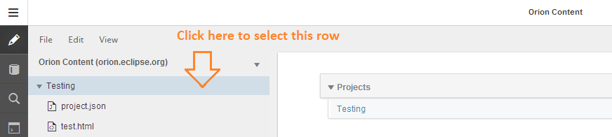
Use gvttester1, gvttester2, gvttester3 as user names to login to http://tvt80.orion.eclipse.org:9000/.
All tests are prefixed with a GVT##### for referencing in bug reports if necessary
1) Click on File->New->Project->Basic. Enter a project name of your choice in the prompt that appears.

2) Verify that the Project you created has the name you selected.
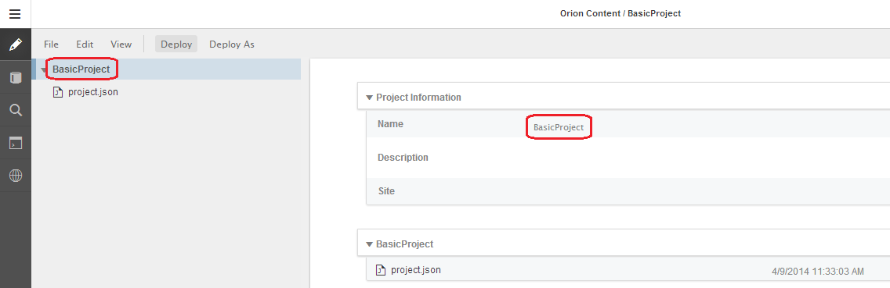
1) Move your mouse over the project “Name” in the “Project Information” section on the right-hand side and click on it. Modify the name.
2) Move your mouse over the empty project “Description” area and click on it. Input a project description of your choice.
3) Move your mouse over the empty project “Site” area and click on it. Input a website address of your choice.

4) Click outside of the “Site” input box. This will save the newly entered Site.
5) Refresh the page. Verify that the information you entered was saved correctly and that the project name in the navigator on the left hand side matches the new project name you entered in the Project Information section. Note that the breadcrumb (highlighted below) will still have the original project name you selected when you created the project. At the time this document was written this is the expected behavior.
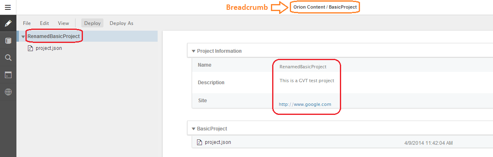
1) Create a new file using the File menu. Click on File->New->File
2) Input a file name of your choice and press the Enter key

3) Verify that a new file with the name you entered was created. An icon should appear next to the file name and it should be automatically opened in the Editor on the right- hand side. The breadcrumb should indicate the new file name correctly.

4) Create a new folder and verify that it was successfully created with the name you selected by repeating steps 1-3 and selecting Folder instead of File from the File->New menu in step 1.

1) Right click on your newly created file and select “Rename” from the context menu.

2) Input a new name of your choice, press Enter and verify that the file has been properly renamed.
3) Rename your newly created folder the same way you renamed the file and verify that the folder now has the new name you selected.

1) Ensure that the file you renamed in the previous test is NOT open in the editor. You can do this by opening the project.json file or by clicking on the renamed folder to open it.
2) Launch the Find File dialog by pressing Ctrl+Shift+F (Cmd+Shift+F MacOS).
3) Start typing the name of the file you renamed in the previous test. You should see a link to the file appear below the text input. Click on it and make sure that the file has been successfully opened in the editor.

GVT0160 Text file input 1) Open the file you renamed in the previous test by clicking on the file name in the navigator on the left-hand side. 2) Start typing content in the Orion editor in the language of your choice. Press Ctrl+S (Cmd+S Mac- OS), or use the File menu, to save the content.
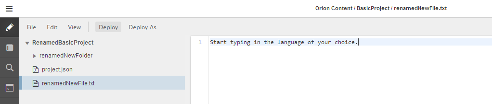
3) Navigate to the renamed folder by clicking on the folder name in the navigator. 4) Open the file you modified in step 2 again and verify that the content was saved correctly.
1) Open the file you created in the previous step.
2) Ensure the file has at least 3 lines of content with repeated words and save it. You can do this by copying the first line and pasting it twice. (Ctrl+C and Ctrl+V keyboard shortcuts should work, Mac equivalents should work as well, otherwise you can use the Edit menu to copy and paste)
3) Place your cursor at the beginning of the file and press Ctrl+F (Cmd+F MacOS) to open the find/replace dialog.

4) Type in a search string in the language of your choice that will match text in the editor.
5) Ensure the text is highlighted properly for the first match (subsequent matches show in lighter color).
6) Press “enter/return” to match the next entry. You should be able to keep pressing enter to loop around the matches.
7) Type in a replacement string in the language of your choice in the “Replace With” entry field and press “Replace”.
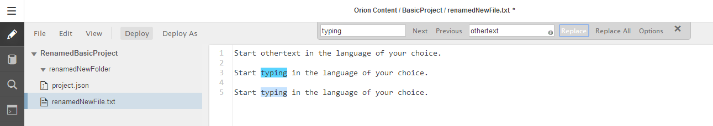
8) The first (or the occurrence you currently had highlighted) should be replaced.
9) Then press Replace All and ensure all selections are replaced.
10) Do NOT press Save, instead simply refresh the page reverting all your changes.

1) Open the file you modified in the previous test
2) Use the incremental find function Ctrl+J (Cmd+J MacOS)
3) Start typing some text that should match what's in the editor in the language of your choice.

1) In the vertical side-menu click on the repositories link
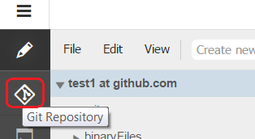
2) The Repositories page should open. Click on the drop down button and then click on the “Clone Repository” button.
3) In the popup that appears click on the “More” button.

4) Another dialog window with “Clone Git Repository” should open. In this dialog enter “git://github.- com/kenwalker/webapp_example.git” as the Repository URL. Make sure that the “New folder” radio button is selected and enter a name for the new folder in the language of your choice. Click OK
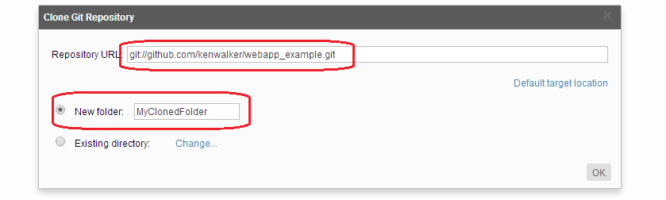
5) This action will “clone” code from a GitHub repository into your Orion Workspace. Essentially, it adds some code you can look at. Click on the repository drop down button and select the one that you just created.
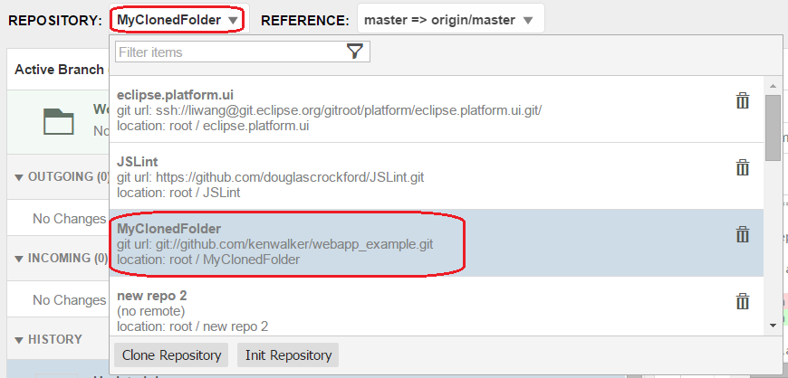
6) Verify the history of the ripository.
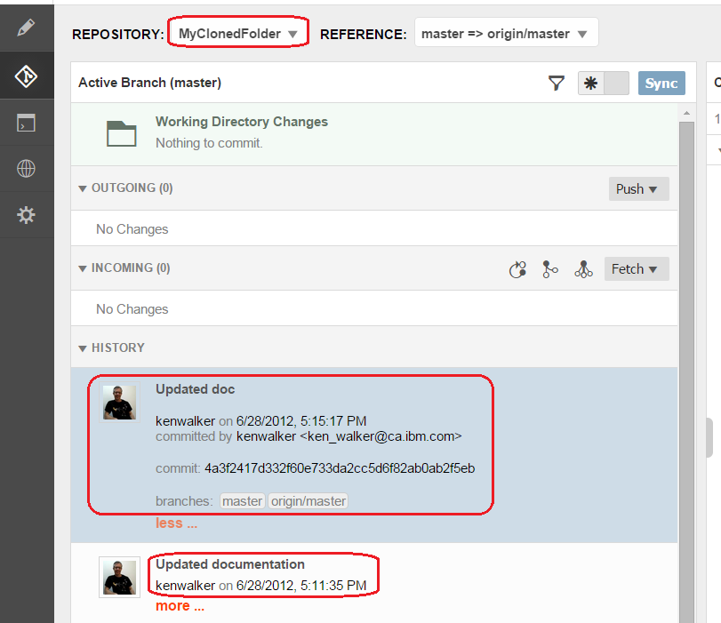
1) Press Ctrl+Shift+F (Cmd+Shift+F MacOS) and type “index.html” in the dialog that appears. Click on the index.html file link.

2) This should open index.html in the editor. You want to make the following change just so that other Orion screens can be verified. Replace the “HelloWorld” text with a string in the language of your choice. (e.g. in the screenshot below it has been replaced with “MAKE THIS CHANGE”).

3) Press Ctrl+S to save the change you made. Click on the repository icon again in the vertical side-menu.
4) On the right hand side of the repository page expand the index.html file's row by clicking on the triangle to the left of the file name.
5) You should now see an area showing the code that was modified in step 2. Verify that the original line containing the “HelloWorld” string is highlighted in red and that there's a new line below it highlighted in green containing the string that you entered in step 2.

1) On the right hand side of the repository page, check the check box on the left side of the “index.html” file name. 2) Enter a commit message in the language of your choice and hit “Submit”.

3) You should see another box appearing under the commit message box asking for information about the committer. Enter the required info in the language of your choice and press commit again.
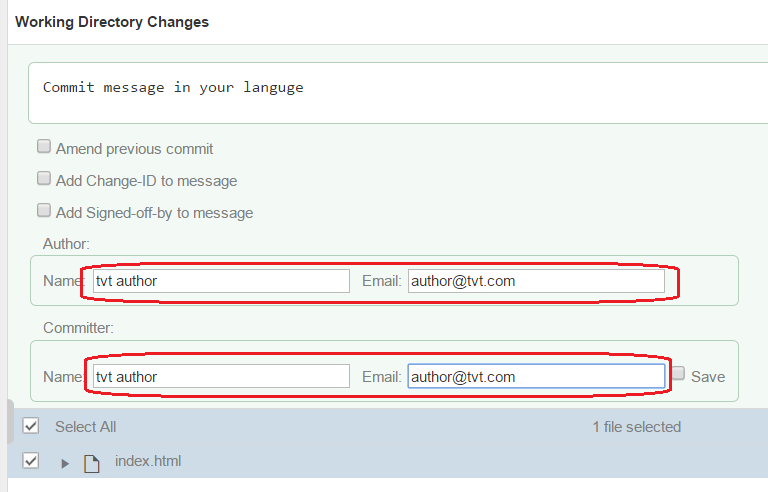
4) The commit should now appear on the top of the left hand side od the page. Click on "more" button to see more information about it. Verify that all the information you entered in steps 2 and 3 is being displayed correctly.

5) Select the commit and press the “Revert” button on the right hand side. This will revert the commit back to your work space.
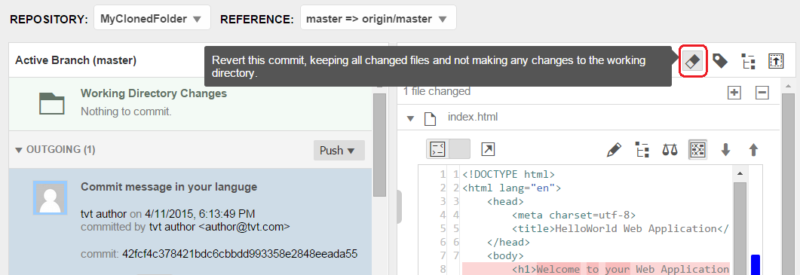
1) In the editor page, right click on the "MyClonedFolder" created in part 2 and select "search in folder...".

2) A slide out pane appears on hte left hand side of the page. Type a search term and click on searc hbutton.
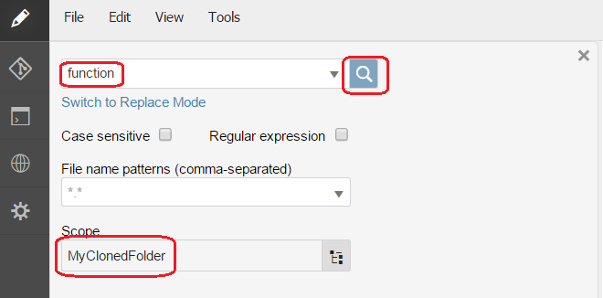
3) Check the search result on our search term.

1) Click on "edit seach" link in the search result pane.
2) Click on "Switch to replace mode" link and put a replace term in the replace box. Click on "replace".
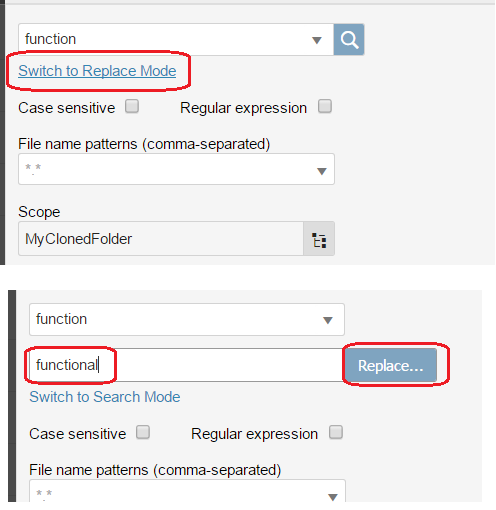
3) This should show you a preview of the Original and Replaced file as can be seen in the following screenshot. Check that the search and replace terms are properly highlighted and that the replacement makes sense.
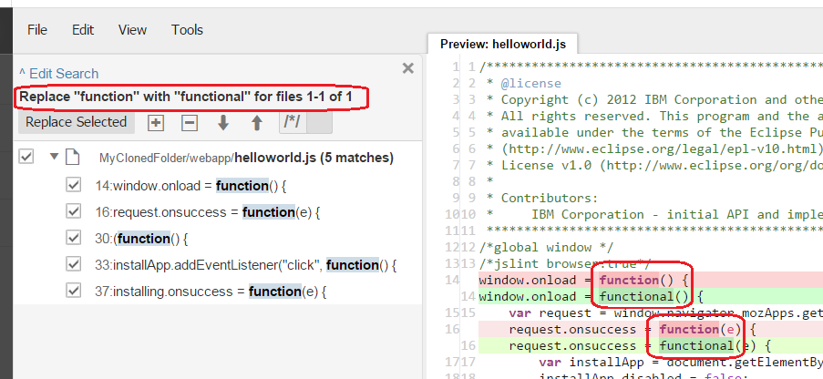
4) Click on the “Replace selected” button that is above the search results section.
5) Use Ctrl+Shift+F (Cmd+Shift+F MacOS) to open the the file you just modified in the editor and check that the text was replaced successfully
1) Click on the shell icon in the vertical side-menu
2) The Shell page should open and the cursor should be in the input area at the bottom of the page

3) Type in “ls” and press Enter
4) If you have just completed the “Global replace” test case, you should see the name of the project that contains the renamed file you modified as well as the list of files and folders it contains.
5) Change directories into a folder that you renamed by typing “cd <renamed folder name>” and press Enter. The cd command has auto complete so you should be able to match part of the folder name and press tab to auto complete and then press Enter
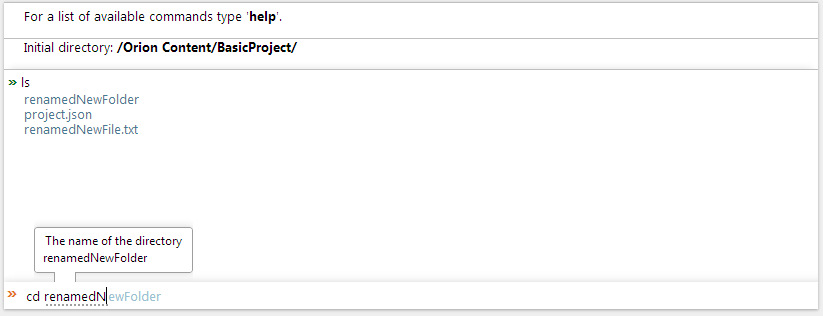
6) Go back to the parent directory by typing “cd ..” and pressing Enter
7) Test that launching the editor on a file with a name in a different language works properly by typing in “edit <the file you renamed>” and press Enter. The edit command has auto-complete so you should be able to match part of the file name and press tab to auto complete and then press enter
8) The file should open properly in the editor using that command.

1) Click on the Sites icon in the vertical side-menu.
2) When the “Sites” page appears, press the “Create” button.
3) Type in a name for your site in the language of your choice and hit Submit.
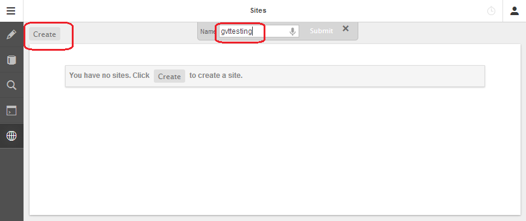
4) In the “Mappings” section of the resulting page, press the “Add” dropdown button and choose the folder you cloned the webapp_example project into

5) Press the “Start” button in the upper left portion of the page. The “Status:” message should say that your site has been started and should contain a link to it.

6) Press the “Stop” button to stop the site from running. You want to click on the “Sites” portion of the Breadcrumb at the top of the page to return to the list of all Sites.

7) Ensure that the site name you selected is being properly displayed in that page.
8) Press the “Delete” to the right of the site you just created and confirm that you DO want to delete it.
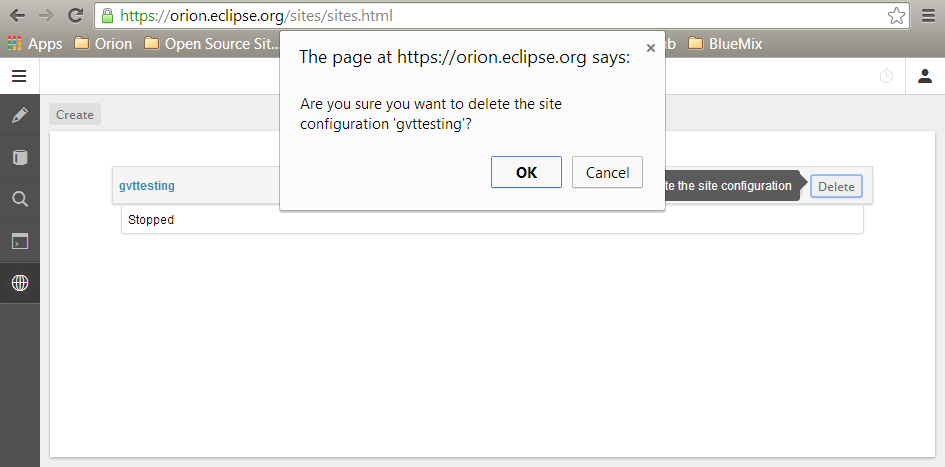
1) Open any editable file in the editor
2) Press the “options” button in the top right and click on Keyboard Shortcuts in the dropdown menu that appears.

3) In the keyboard shortcuts popup verify that you can filter appropriately. Then press escape to close the dialog.

1) Click on the Editor (pencil) icon in the vertical side-menu
2) Hold the Ctrl (Cmd MacOS) key and select both top-level folders you created in the navigator using your mouse
3) Delete both of them by triggering the context menu on one of them, clicking on Delete and confirming that you DO want to delete them.

4) Choose the “Options” button in the top right and select the menu item “Sign Out”
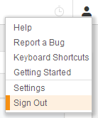
If all the steps above were followed in sequence then the testing account should be left in the same state as when you started. Page